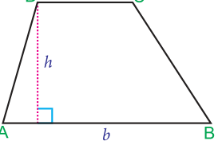
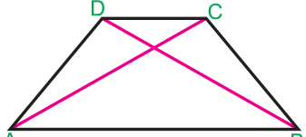
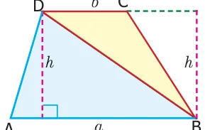
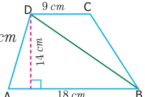
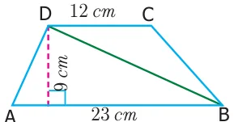
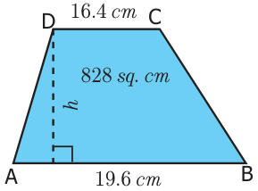
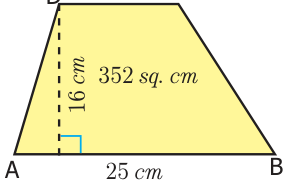
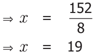
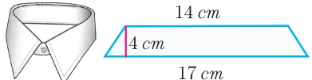

We are familiar with parallelogram and rhombus. What will happen in a parallelogram if one pair of parallel sides are not equal? Can you draw it? How will it look like? The shape looks as given in Fig.2.19. A parallelogram with one pair of non-parallel sides is known as a Trapezium.

The distance between the parallel sides is the height of the trapezium.
Here the sides AD and BC are not parallel, but AB is parallel to DC.
Isosceles Trapezium

If the non - parallel sides of a trapezium are equal (AD = BC) then, it is known as an isosceles trapezium.
2.4.1 Area of the Trapezium Fig.2.20 ABCD is a trapezium with parallel sides AB and DC measuring ‘a’units and ‘b’ units respectively. Let the distance between the two parallel sides be ‘h’ units. The diagonal BD divides the trapezium into two triangles ABD and BCD.
Area of the trapezium = area of \(ABD +\) area of \(= \frac{1}{2} x AB x h + \frac{1}{2} x DC x h\) [since the two triangles ABD and BCD have same heights]
Area of a trapezium \(= \frac{1}{2} x\) {h x (AB + DC)} Therefore, Area of the trapezium \(= \frac{1}{2} x h (a+b)\) sq.units.

Example 2.10
Find the area of the trapezium whose height is 14 cm and the parallel sides are 18 cm and 9 cm of length.
Solution
Given, height (h) \(= 14\) cm parallel sides are (a) \(= 18\) cm and (b) \(= 9\) cm Area of the trapezium \(= \frac{1}{2} x h (a+b)\)

\(= \frac{1}{2} x 14 (18+9) Fig.2.23 = 7(27)\)
\(= 189\) sq. cm
Therefore, area of the trapezium is 189 sq. cm.
Example 2.11
The parallel sides of a trapezium are 23 cm and 12 cm. The distance between the parallel sides is 9 cm. Find the area of the trapezium.
Solution

Given, height (h) \(= 9\) cm Parallel sides are (a) \(= 23\) cm and (b) \(= 12\) cm
Area of the trapezium \(= \frac{1}{2} x h (a+b) Fig.2.24\)
\(= \frac{1}{2} x 9 (23+12) = \frac{1}{2} x 9 (35) = 157.5\) sq. cm
Therefore, Area of the trapezium is 157.5 sq. cm.
Example 2.12
The area of a trapezium is 828 sq. cm. If the lengths of its parallel sides are 19.6 cm and 16.4 cm, find the distance between them.
Solution
Given, Area of the Trapezium= \(828 cm^{2}\)
\(\frac{1}{2} x h (a+b) = 828 \frac{1}{2} x h (19.6+16.4) = 828 \frac{1}{2} x h (36) = 828 h (18) = 828\)

\(h = \frac{828}{18} h = 46\) cm
Therefore, distance between the parallel sides \(= 46\) cm
Example 2.13
The area of a trapezium is 352 sq. cm and the distance between its parallel sides is 16 cm. If one of the parallel sides is of length 25 cm then find the length of the other side. x cm
Solution

Let, the length of the required side be ‘x’ cm. Then, area of the trapezium \(= \frac{1}{2} x h (a+b)\) sq. units
\(= \frac{1}{2} x 16 (25+x) Fig.2.26\)
\(= 200+8x\)
But, the area of the trapezium \(= 352\) sq. cm (given)
Therefore, \(200 + 8x = 352\)
& \(8x = 352 - 200\)
& \(= 152\) & \(= \frac{152}{8}\)

& =
Therefore, the length of the other side is 19 cm.
Example 2.14
The collar of a shirt is in the form of isosceles trapezium whose parallel sides are 17 cm and 14 cm and the distance between them is 4 cm. Find the area of canvas that will be used to stitch the collar.
Solution

Given height (h) \(= 4\) cm Parallel sides are (a) \(= 17\) cm and (b) \(= 14\) cm Fig.2.27 Area of the trapezium \(= \frac{1}{2} x h (a+b)\) sq. units
\(= \frac{1}{2} x 4 (17+14) = \frac{1}{2} x 4 (31) = 62\) sq. cm
Therefore, the area of canvas used is 62 sq. cm.
Though there are various common types of cross sections available for irrigation canals, trapezoidal cross section is widely used, because it prevents overflowing during heavy rains, maximum water flow is possible with minimum time (least frictional resistance) and safety
measures can be taken easily while someone or something falls into it.